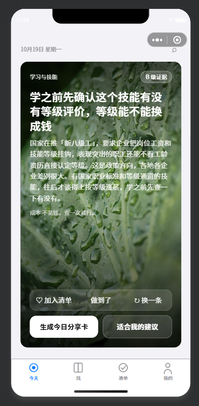
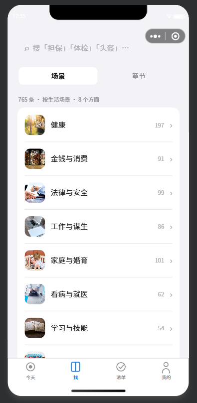
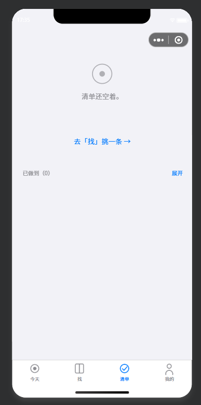
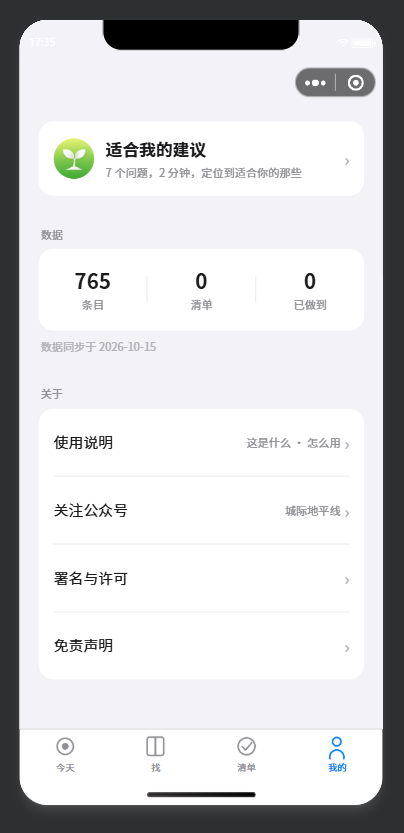

00
怎么读这页
先看状态图例，再看图这不是一篇「应该怎么做」的教程，是一个真实项目走到哪一步的实录。所以每个节点都带状态：哪些已经跑通、哪些还没动、哪些被现实卡住。看的时候先扫状态，再看内容——卡住的节点才是你真正要花时间的地方。
已做 · DONE
跑通过，产出物在仓库里，校验为绿。可以直接照抄做法，但别照抄结论——你的数据不一样。
待做 · TODO
步骤清楚、工具就位，只是还没执行。这类节点最容易拖，因为没有技术难度，只有「还没轮到我」。
卡点 · BLOCK
不是不会做，是受外部条件限制：平台规则、资质、时间窗。这类节点决定上线日期，而不是开发进度。
口径说明：节点里的体积、页数、断言数都取自
tools/check_v01.py 与 tools/test_logic.js 的实测输出（2026-10-20 复跑，errors 0 · 69/69 PASS）。微信侧的规则（主包 1.5MB、单 JS 500KB、压缩器不认 ES2020）来自开发者工具本体与官方文档，不是经验值。01
全流程节点图
点任意节点看详情五个阶段的分界不是时间，而是「拿到什么才能进入下一步」：许可没确认，内容就不能用；数据没切片，页面就写不了；质量面板没绿，上传就没有意义。十九个节点横向串联——行内箭头是先后，行尾箭头是换行接续。
点左侧任意节点，这里显示该节点的作业说明、工具命令与注意事项。
走完这十九个节点，产出物是这四屏
真机预览截图，非设计稿照片款卡片、八个场景的分组计数、清单的空状态、关于板块——每一处都能回溯到上面某个节点。点图看原尺寸。




图注：四张截于 2026-10-19 的真机预览，对应节点 7–10（设计系统、页面骨架、核心组件）。「我的」页的关于板块此后改成了折叠式（下载电子书 / 署名与许可 / 免责声明收进「更多」，另加「关于作者」），图里仍是改版前的平铺形态。
02
微信开发者工具：从导入到上传
这一段最容易卡在配置上代码写完了不等于能看到效果。开发者工具这一段有四个独立的坑：导入层级、基础库与编译设置、域名校验、云函数部署。任何一个没对，表现都是「页面白屏」或「功能静默失效」，而不是报错——所以每一步都要有明确的验收动作。
| 步骤 | 在哪儿 | 要做什么 | 验收标准 |
|---|---|---|---|
| 1 导入项目 | 启动页「导入项目」 | 目录选 含 miniprogramRoot 的那一层（项目根），不要选 miniprogram/ 子目录。填 AppID。 |
编译成功，模拟器出首屏 |
| 2 核对配置 | 资源管理器根目录 | 确认根目录有且只有一对 project.config.json + project.private.config.json，且含 cloudfunctionRoot。 |
右键 cloudfunctions/ 有「上传并部署」菜单 |
| 3 基础库 | 详情 → 本地设置 | 调试基础库选项目要求的最低版本（本项目 3.17.4），不要图省事选最新——最新库会在老机型上崩。 | 控制台无「基础库版本过低」告警 |
| 4 编译选项 | 详情 → 本地设置 | 勾「将 JS 编译成 ES5」；babelSetting.ignore 留空（填了会把压缩一起跳过）。 |
代码质量面板无相关扣分 |
| 5 压缩开关 | project.config.json 的 setting |
写 minified（JS）、minifyWXML、minifyWXSS。字段名里没有 minifyJS。 |
「代码质量」里三项压缩全部通过 |
| 6 重新打开项目 | 菜单 → 关闭 / 重新打开 | 工具只在打开项目时读一次配置文件。改完必须重开，否则改了等于没改。 | 质量面板状态跟着变 |
| 7 预览 / 真机调试 | 工具栏「预览」「真机调试」 | 扫码在真机跑一遍主流程，重点验外链、canvas 出图、文件下载。 | 真机上主流程无白屏、无静默失败 |
| 8 上传体验版 | 工具栏「上传」 | 填版本号（如 0.2.0）与备注，写清「这次改了什么」，否则三个版本后没人分得清。 | 后台「版本管理」出现该版本 |
| 9 设为体验版 | 后台 → 版本管理 → 开发版本 | 把刚上传的版本设为体验版，加体验成员后生成体验版二维码。 | 非开发者身份的成员能扫码打开 |
四类常见报错与根因
| 表现 | 真实根因 | 怎么确认 |
|---|---|---|
改 project.config.json 毫无反应 |
改的不是工具认的那一份。工具认「它自己生成过配置」的目录。 | 看日志里 opening project 的 projectId 指向哪一层 |
| 「对 JS 文件进行压缩」不通过，但 WXML/WXSS 通过 | 判定源码只读 setting.minified，与编译产物无关。 |
grep 工具本体校验函数；或把三份配置的 minified 全置 true |
| 图片空白，但文件确实在云存储里 | <image> 直接绑了 cloud://，一次解析失败就被当相对路径并缓存失败结果。 |
日志搜 onProxyError / ENOENT ...cloud: |
| 功能在开发者工具正常，真机失效 | 外链域名没备案、进不了请求白名单；工具里勾了「不校验合法域名」把问题掩盖了。 | 真机关掉调试、或看后台「服务器域名」配置 |
03
提审与发布
代码之外的第二道关审核不看你的代码写得好不好，只看三件事：类目对不对、有没有资质、有没有碰敏感表述。这三件事在写代码之前就该想清楚——写完再改，改的是名称、类目和整页文案。
提审前必须准备好的四样
- 类目：与服务实际内容一致。内容涉健康建议，就不能挂在纯工具类目下不管。
- 资质：医疗、金融、教育等类目要前置资质。用词越接近这些领域，被要求补资质的概率越高。
- 用户隐私保护指引：凡是调用登录、获取头像昵称、位置、相册的，必须逐项声明，否则直接驳回。
- 测试账号：需要登录才能看全貌的，审核备注里给一个可用账号，否则审核员看不到内容会判「功能不完整」。
发布之后才算完
- 全量发布：审核通过只是「可以发」，还要在后台点发布，并可选择分阶段发布。
- 云函数仍要单独部署：代码审核通过不会替你部署云函数，没部署的能力继续静默降级。
- 回滚预案：后台支持版本回退，但云函数与数据结构不一定能回退——改数据结构前先备份。
- 体验版常驻：留一个体验版给下个版本自测，别把版本号占满。
时间口径：审核时长官方只给区间不给承诺，节假日与类目敏感度都会拉长。排期时把「提审 → 通过」按最坏情况算，不要按最快算。
04
五条红线
踩了不是返工，是发不出去下面五条都不是「建议」，是平台的硬规则或已验证的静默失败。它们的共同点是：不会报错，只会让你以为没问题。
05
交付自检清单
上传前逐条打勾前半是本地脚本能自动查的，后半只能人工看。自动化的部分每次改完都要跑一遍——它们挡住的都是「不会报错但会出错」的问题。
| 检查项 | 怎么查 | 通过标准 |
|---|---|---|
| 结构与体积 | python tools/check_v01.py | errors 0；主包 < 1.5MB；单 JS < 500KB |
| 未使用 JS / 孤儿组件 | python tools/audit.py | 0 issues（只被分包用的工具必须在分包里） |
| WXML 语法 | node tools/check_wxml.js | 全部文件 0 issues |
| ES2020 兼容 | python tools/check_minify_compat.py | blockers 0（?. ?? ** 一律不许出现） |
| 逻辑行为 | node tools/test_logic.js | 全部断言通过（本项目 69 项） |
| 分享卡坐标 | node tools/check_card_layout.js | 不出画布、不压小程序码 |
| 代码质量面板 | 开发者工具 → 代码质量 | 五项硬性项全绿 |
| 图片与外链 | 全局搜 cloud:// 与 http:// | image 的 src 全走 https；cloud:// 只出现在 API 调用里 |
| 真机主流程 | 预览 / 真机调试 | 首页、清单、搜索、出图、下载全部可用 |